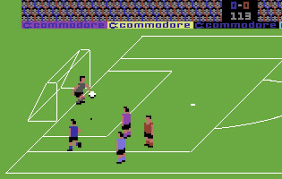

Actualmente vivimos en un mundo en el que la programación está cada día más presente, nuestras rutinas diarias están prácticamente siempre ligadas a equipos u objetos programables, por lo que conocer cómo funcionan y cómo usarlos es muy recomendable. Otra opción es tener a un programador cerca!
La programación no estaba en mis primeras opciones laborales cuando empecé mis estudios, me interesaban más el diseño, la informática audiovisual y sus procesos creativos.
Cómo iba a ser programador si no era capaz ni de programarme las tareas diarias!
Pero después de adentrarme en este mundo me atrapó hasta el punto de convertirse, no sólo en una pasión, sino en una forma de pensar, de experimentar y de crecer aprendiendo
Estudios
Graduado multimedia
El grado de Multimedia en línea de la Universitat Oberta de Catalunya (UOC) está diseñado para formar a profesionales altamente cualificados y conectados con el mundo de la industria multimedia. El estudiante adquiere conocimientos sobre desarrollo de webs, diseño de interfaces y experiencia de usuario, grafismo digital 2D y 3D, animación, imagen y audio digitales, realidad virtual, vídeo en la red y videojuegos, mediante diferentes dispositivos y plataformas.
Ingeniería Informática
En un contexto de alto crecimiento de la informatización y de la conectividad de empresas, administraciones públicas y hogares de todo el mundo, el sector de las tecnologías de la información y las comunicaciones ha adquirido una importancia crucial en la sociedad y la economía actual. En consecuencia, la ingeniería informática se ha convertido en una titulación con una demanda creciente de profesionales.
Bootcamp Keep Coding
En KeepCoding formamos a la Élite del Desarrollo, y ahora hemos trasladado nuestra filosofía de excelencia al entorno web. Combinamos preparación técnica intensiva con entrepreneurship, metodologías de trabajo en equipo y más. Al finalizar, tendrás un bagaje que te permitirá optar a los mejores puestos de desarrollo web del mundo. En esto también te ayudaremos, ya que contarás con un coach profesional que te asesorará en todo momento para entrevista de trabajo.
Sobre mi
Pues empecemos por el principio…
Mis primeros contactos con la informática se remontan a un commodore 64 que mis padres trajeron a casa, en todos lados prometían que aquello era el futuro, todos los padres lo compraban pensando que sus hijos se pondrían a picar código para aprender ese fabuloso lenguaje conocido como BASIC, o para trastear con los modernísimos programas de diseño gráfico, contabilidad, matemáticas, bases de datos que tanto nos tenían que ayudar en nuestros estudios… El futuro en casa! Pobres ilusos!

También quedaban tardes para husmear en eso de la programación, las revistas especializadas de la época traían unos listados de código en BASIC que uno podía picar en su ordenador sin tener ni idea de lo que estábamos escribiendo.
Eso sí, la sensación de ver que cómo después de una tarde copiando código, aparecía un cuadrado que el solito se movía de un extremo de la pantalla hasta el otro, era toda una victoria de la ingeniería. Nos sentíamos como trabajadores de la NASA lanzando cohetes al espacio en busca de vida extraterrestre.
Ésta y otras sensaciones son lo que me han hecho ser un apasionado de la programación, me acuerdo de uno de los primeros programas que hice, al ejecutarlo el ordenador preguntaba tu nombre, después de escribirlo se hacía la magia, en la pantalla aparecía el siguiente texto: “Hola, Jordi, que tengas un buen día!”
Es difícil explicar la sensación que te invade cuando un programa hace correctamente lo que tú quieres.
Se trata de crear, inventar e imaginar, resolver problemas lógicos y la sensación de realización personal cuando las cosas funcionan es lo que me mantiene enganchado al mundo del desarrollo.
'Programar es lo más cercano que tenemos a un superpoder.'
-Drew Houston, creador de Dropbox
Aunque parezca que son mundos totalmente alejados, la programación tiene una relación muy estrecha con el diseño y la creatividad, existen los códigos “bonitos”, bien estructurados y con ingeniosas formas de resolver problemas.
'Codifica siempre como si la persona que finalmente mantendrá tu código fuera un psicópata violento que sabe dónde vives'
-Martin Golding
Soy de los que cree que se debería aprender a programar en la escuela, mejora la capacidad de pensar y la habilidad de resolver problemas y siendo ambiciosos, porqué no, con la programación puedes cambiar el mundo!
En la escuela nos enseñan matemáticas, y no para que en el futuro seamos matemáticos, sino porqué a lo largo de nuestra vida necesitaremos conocerlas y usarlas. Lo mismo pasa con la física, en todas las escuelas es una materia obligatoria, no necesariamente para crear físicos del futuro, sino porqué el entorno en el que vivimos se rige por las leyes de la física, por lo que es bueno conocerlas.
Vivimos en un mundo en el que la programación está cada día más presente, nuestras rutinas diarias están prácticamente siempre ligadas a equipos u objetos programables, por lo que conocer cómo funcionan y cómo usarlos es muy recomendable.
Y si has llegado hasta aquí, imagino que te debes sentir como el conejo del vídeo!